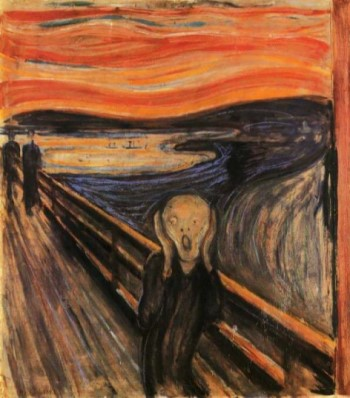
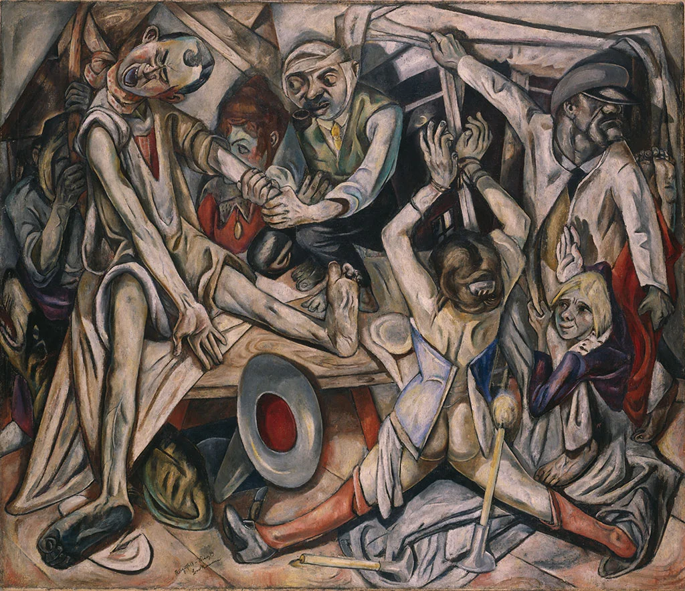
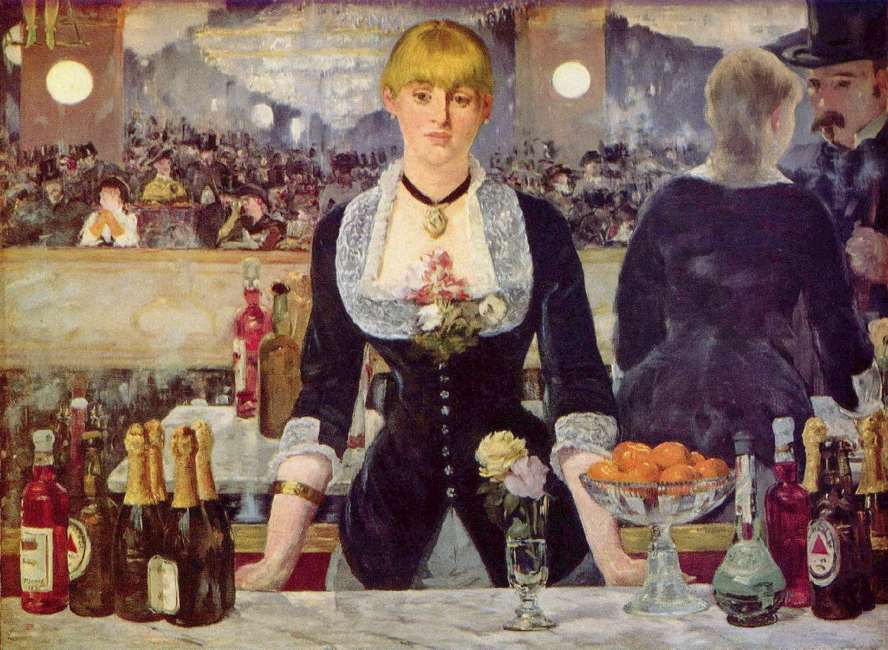
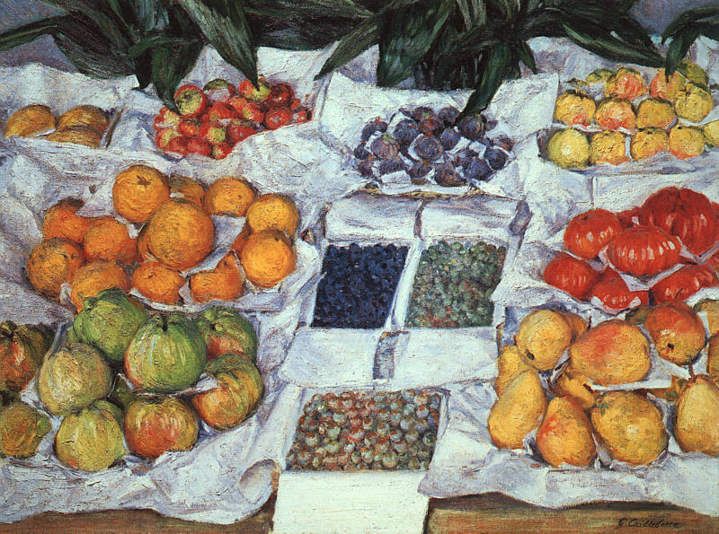

Frederic Edwin Church, Niagara Falls, 1856
Wadsworth Atheneum Museum of Art, Hartford, Connecticut, US
https://www.thewadsworth.org/wp-content/gallery/hudson-river-school/1971.78.jpg

Thomas Cole, The Oxbow, View from Mount Holyoke, Northampton, Massachusetts, after a Thunderstorm, 1836
The Metropolitan Museum of Art, New York City, New York, US
https://collectionapi.metmuseum.org/api/collection/v1/iiif/10497/1655152/main-image

Asher B. Durand, View toward the Hudson Valley, 1851
Wadsworth Atheneum Museum of Art, Hartford, Connecticut, US
https://www.thewadsworth.org/wp-content/gallery/hudson-river-school/1948.119.jpg

Edvard Munch, The Scream, 1893
National Gallery and Munch Museum, Oslo, Norway
https://www.edvardmunch.org/images/paintings/the-scream.jpg

Anselm Kiefer, Lot's Wife, 1989
Cleveland Museum of Art, Cleveland, Ohio, US
https://i.pinimg.com/originals/76/5a/6c/765a6c368d973c68bdb591916f7cded4.jpg

Max Beckmann, The Night, 1918-19
Kunstsammlung Nordrhein-Westfalen, Düsseldorf, Germany
https://upload.wikimedia.org/wikipedia/commons/1/19/Max_Beckmann%2C_1918-19%2C_The_Night_%28Die_
Nacht%29%2C_oil_on_canvas%2C_133_x_154_cm%2C_Kunstsammlung_Nordrhein-Westfalen%2C_D%C3%BCsseldorf.jpg

Edouard Manet, A Bar at the Folies Bergere, 1882
Courtauld Gallery, London, England
http://www.arthistoryarchive.com/arthistory/impressionism/images/EdouardManet-A-Bar-at-the-Folies-Bergere-1882.jpg

Gustave Caillebotte, Fruit Displayed on a Stand, 1882
Museum of Fine Arts, Boston, Massachusetts, US
http://www.arthistoryarchive.com/arthistory/impressionism/images/GustaveCaillebotte-Fruit-Displayed-on-a-Stand-1882.jpg

Claude Monet, soleil levant, 1872
Marmottan Monet Museum, Paris, France
https://upload.wikimedia.org/wikipedia/commons/thumb/5/59/Monet_-_Impression%2C_Sunrise.jpg/1280px-Monet_-_Impression%2C_Sunrise.jpg